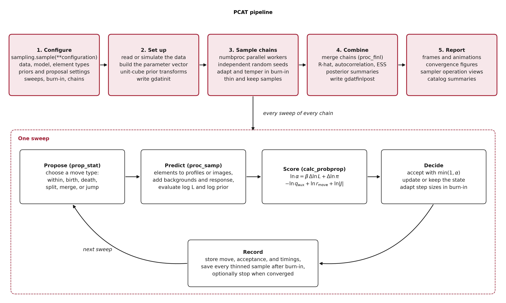
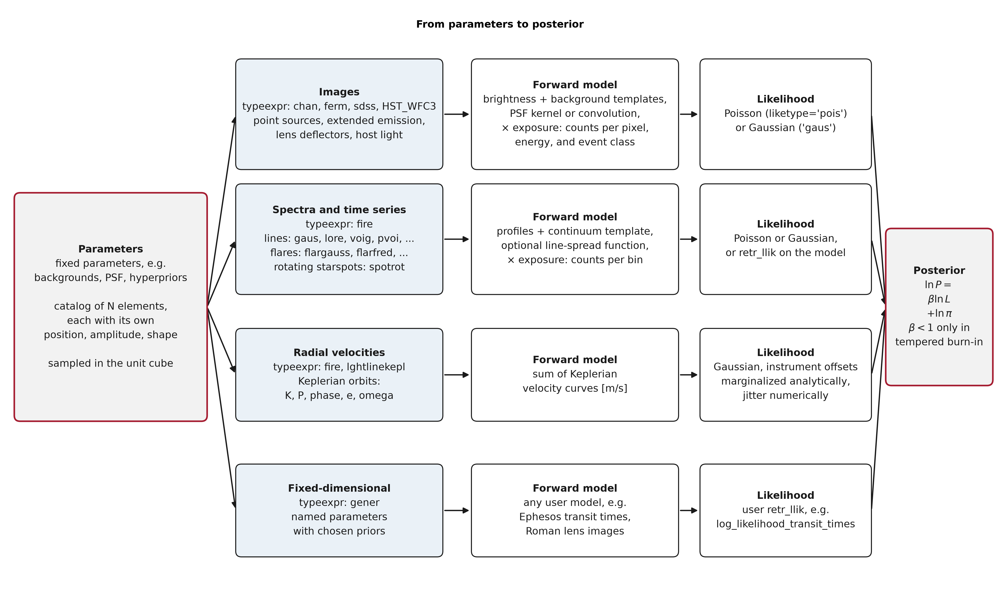
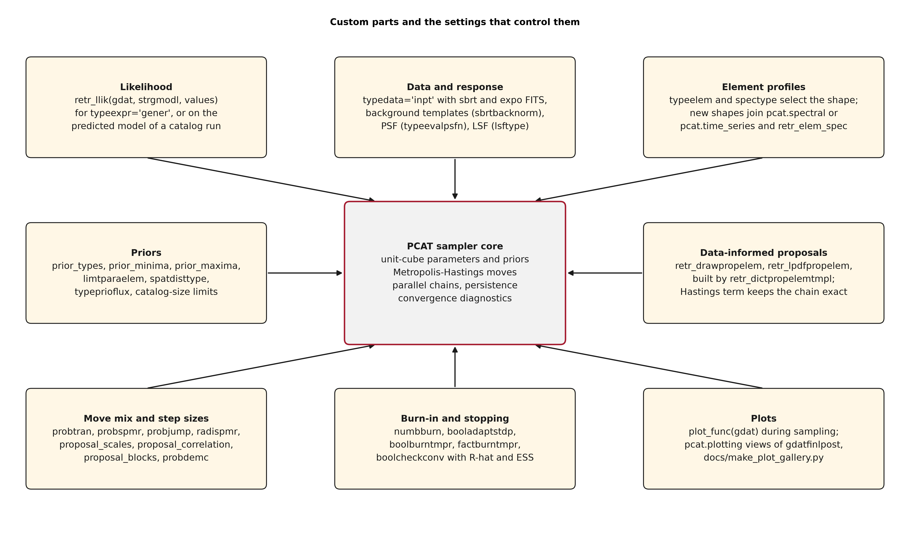

How PCAT works
These schematics summarize how a run proceeds, how each data family becomes a
likelihood, and which parts of PCAT a user can replace or tune. Regenerate them
with python docs/make_diagrams.py; the script fails if any label overflows
its box.
Pipeline
A call to pcat.sampling.sample() configures the run, sets up the data and
the parameter vector, samples numbproc independent chains, combines them,
and writes the reports described in Outputs and diagnostics. Every sweep of every chain
proposes one move, predicts the data, scores the Metropolis-Hastings ratio,
accepts or rejects the candidate, and records the outcome. Sampling, proposals, and convergence
defines each move and each term of the ratio.


Likelihoods
The same parameter vector, fixed parameters plus a catalog of elements, feeds one forward model per data family. The likelihood of the predicted data and the prior form the posterior; the likelihood is tempered only during an optional tempered burn-in. Likelihood configurations documents each family and its settings.


Custom parts
The sampler core handles priors, moves, chains, persistence, and diagnostics. Around it, the likelihood, data and response, element profiles, priors, data-informed proposals, move mix, burn-in and stopping rules, and plots can be supplied or tuned through the settings named in each box. Public API documents the corresponding functions.

